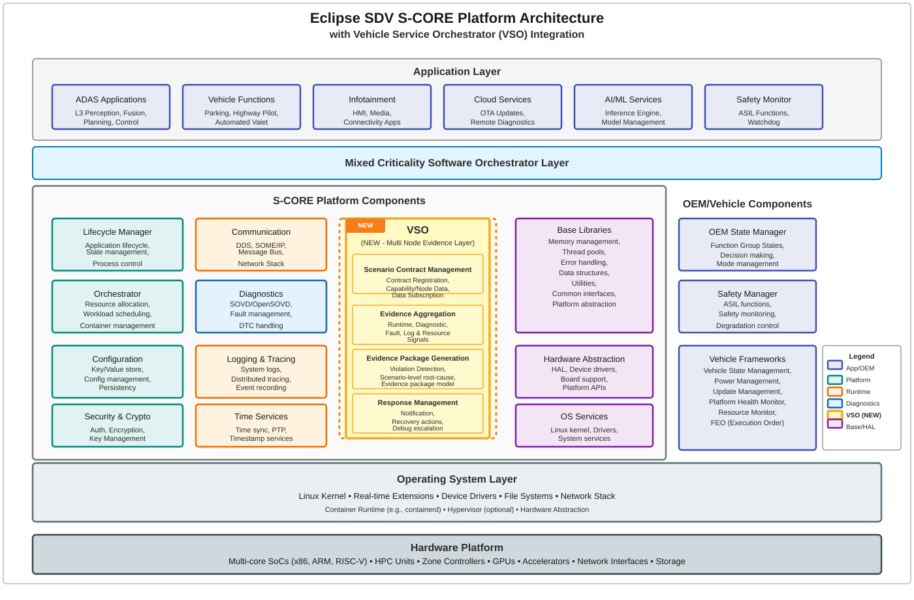
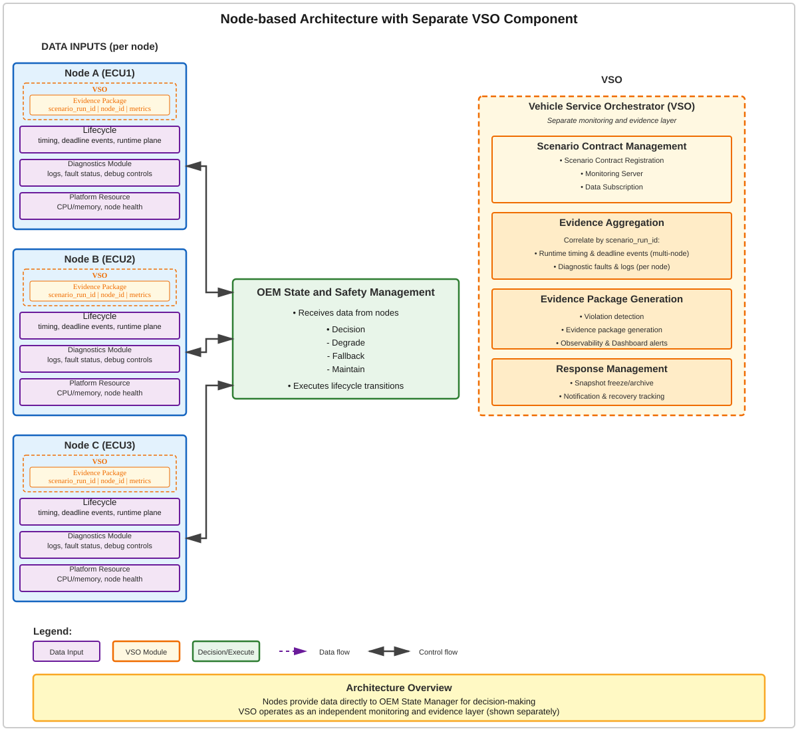
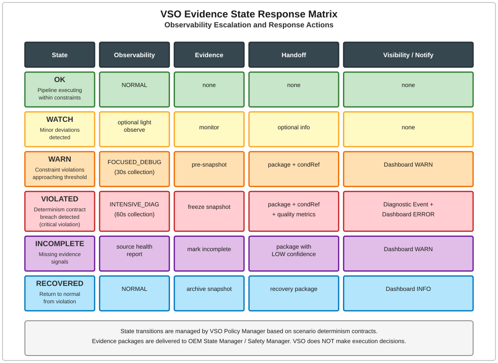
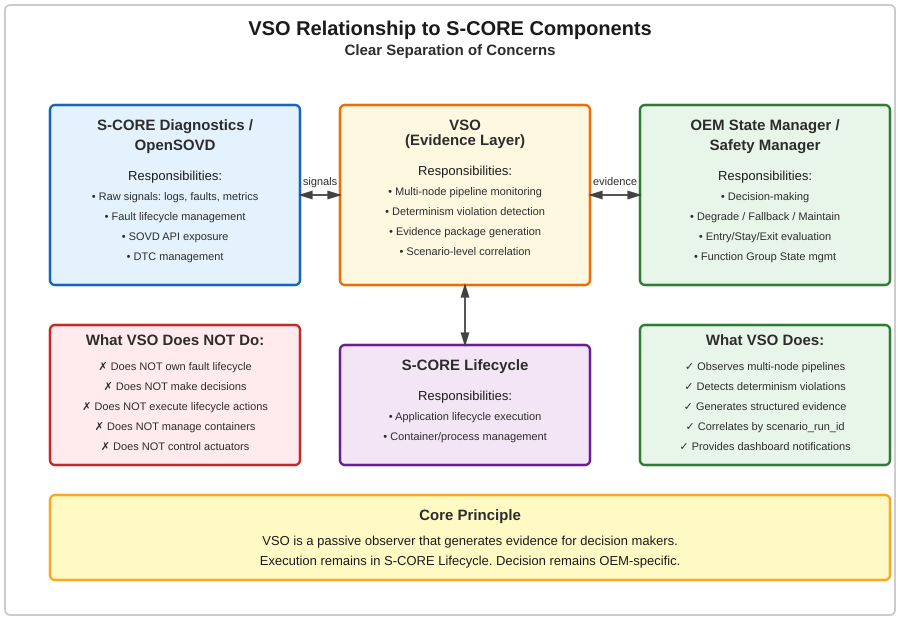

Vehicle Service Orchestrator#
Vehicle Service Orchestrator
|
status: draft
security: YES
safety: ASIL_B
|
||||
Feature flag#
To activate this feature, use the following feature flag:
experimental_vehicle_service_orchestrator
Abstract#
Vehicle Service Orchestrator (VSO) is a Multi-node Scenario Evidence Layer for Eclipse SDV S-CORE.
VSO defines multi-node scenario contracts (pipeline chains) and subscribes to runtime/diagnostic/platform signals. monitors pipeline execution determinism, detects policy violations at scenario level, and correlates evidence using scenario_run_id.
VSO does NOT own diagnostic fault lifecycle, does NOT decide Function Group State, and does NOT execute application lifecycle. VSO hands off determinism evidence packages and conditionRefs to Safety Managers for final safety decisions and approvals. Execution is performed by S-CORE Lifecycle.
Core Proposal:
VSO does not execute
VSO does not decide
VSO observes multi-node scenario pipelines
VSO detects determinism policy violations
VSO generates structured evidence
VSO delivers evidence packages for decisions and statemanagement.
Execution remains in S-CORE Lifecycle. Safety Decisions remain external to S-CORE.
The intent of this feature request is to define the architecture and interfaces for the Vehicle Service Orchestrator as a scenario evidence layer that complements existing S-CORE Diagnostics, Lifecycle and Orchestrator components.
Motivation#
Problem Statement#
Modern SDV scenario pipelines (L3 Highway, Parking/Valet, ADAS services) span HPC, Zonal Controllers and ECUs. Policy based decisions become ineffective without VSO Evidences, such as decisions to switch Autonomous mode to Manual mode, or degrade to a lower ASIL level. Pipeline stages have timing, resource, dependency and diagnostic constraints.
What goes wrong without VSO:
Raw diagnostic data is available, but scenario-level operational evidence is not standardized
Policy violation data is often lost, late, or not correlated by scenario_run_id
Orchestrators may accidentally become state decision makers
Diagnostic fault lifecycle and scenario policy lifecycle may be mixed
Debug escalation is ad-hoc and not contract-driven
Lack of structured evidence for safety decsisions and learning
Fleet/cloud analysis loses context and root-cause evidence
No standard for multi-node scenario evidence layer
Missing determinism monitoring layer
Gap Analysis:
S-CORE Diagnostics → “what happened” (raw signals, faults, logs)
VSO → “did multi-node pipeline break determinism ?” (scenario-level evidence)
OEM State Manager → “what should we do” (decision-making)
S-CORE Lifecycle → “execute decision” (lifecycle actions)
S-CORE already has Diagnostics, Lifecycle, Orchestrator, Logging, and FEO-related building blocks. VSO is proposed as a scenario evidence policy layer that consumes those signals without duplicating their ownership.
Why VSO Fits S-CORE#
S-CORE Direction:
Common open-source SDV runtime foundation
Modular, extensible, safety-ready stack
Feature requests can propose structural changes and new functionality
Diagnostics Direction:
S-CORE Diagnostics proposes SOVD-based diagnostics
Real-time fault access and advanced data handling
Diagnostic feature scope
VSO Alignment:
VSO aligns with S-CORE’s feature request process by introducing a bounded, scenario operational feature that does not bypass safety or execution authority. VSO complements existing S-CORE components:
Diagnostics: VSO consumes diagnostic outputs; it does not redefine diagnostics
VSO: VSO generates evidence; safety managers make decisions
Lifecycle: VSO observes; Lifecycle executes
Rationale#
Multi-node Scenario Awareness#
What “true multi-node awareness” actually means:
A system is multi-node aware only if a control entity can answer all four questions at runtime:
Which nodes exist right now?
What is the role and capability of each node?
What is the real-time health of each node (not just apps)?
Can workloads be safely placed / moved / stopped across nodes?
S-CORE today can only partially answer #4 inside a single node.
Health signals S-CORE already provides (baseline):
Component alive / heartbeat
Lifecycle state (Init, Running, Error, Terminated)
Local application failures
Controlled shutdown / restart hooks
These are necessary, but not sufficient for multi-node decision.
Additional signal categories required for true multi-node awareness:
CATEGORY A: Node Identity & Topology Signals
CATEGORY B: Node Liveness & Reachability Signals
CATEGORY C: Resource Availability (Node-Level)
CATEGORY D: Safety Capability & ASIL Compatibility Signals
CATEGORY E: Workload Placement Feedback (Cross-Node)
CATEGORY F: Fault Domain & Failure Propagation Signals
VSO Solution: Multi-node Scenario Evidence Layer
VSO addresses these gaps by:
Defining and identifying pipeline chains per Node
Monitoring end-to-end determinism
Detecting and correlating violations
Generating structured evidence packages
OEM State / Safety Manager subscribes and receives:
Violation type
Affected nodes
Confidence level
conditionRefs for execution adaptation
evidence quality metrics (freshness, completeness)
Determinism Monitoring#
VSO defines and monitors determinism contracts enabling multi-node scenarios.
Key Concepts:
Multi-node Scenario: A defined pipeline chain and execution dependencies (e.g., L3 Highway: Perception → Fusion → Planning across HPC and zone nodes)
Determinism Contract: Constraints that ensure timing, ordering, and resource guarantees for the entire pipeline (e.g., end-to-end latency ≤ budget, stage ordering preserved, CPU < 90%)
Determinism Evidence: Scenario-level evidence capturing violations of pipeline determinism across nodes
Scenario Policy: Rules for classifying evidence as OK, WATCH, WARN, VIOLATED, or RECOVERED
Evidence Package: Structured package delivered to OEM State Manager / Safety Manager (scenario_run_id, pipeline_id, affected_nodes, violation_type, confidence)
Clear Boundaries#
VSO maintains strict boundaries to avoid conflicting with existing S-CORE components:
VSO Is:
Multi-node scenario evidence layer
Pipeline determinism monitoring layer
Scenario contract manager
Debug/focused collection response coordinator
Evidence package generator
Diagnostic visibility publisher
Operator/dashboard notification source
VSO Is Not:
ASIL safety decision layer
Diagnostic Fault Manager
DTC lifecycle owner
OEM Decision Manager replacement
Lifecycle/Execution replacement
Container/process/resource controller
Actuator/trajectory/emergency braking controller
Specification#
Overview#
VSO is a Multi-node Scenario Evidence Layer that monitors pipeline chain determinism per node and generates evidence for state and Safety Management.
Input:
Runtime timing (multi-node)
Diagnostic data / fault status
Platform resource metrics (per node)
VSO Processing:
Multi-node pipeline monitoring
Determinism contract evaluation
Per-node evidence correlation
Output:
Determinism violation evidence package
conditionRefs for execution adaptation
Diagnostic/decisions event notification
System Architecture#
S-CORE Platform Architecture with VSO Integration#
VSO is integrated as a Multi-node Evidence Layer within the Eclipse SDV S-CORE platform architecture, positioned between the Diagnostics module and OEM/Vehicle components. The diagram below shows the complete platform architecture with VSO’s position and interactions:

VSO Architecture Details#
The system follows a modular architecture integrated within the S-CORE ecosystem:
Data Inputs Layer: Per-node signals (Runtime Plane, Diagnostics Module, Platform Resources)
VSO Core Modules: Scenario Contract Management, Evidence Aggregation, Evidence Package Generation, Response Management
Output Layer: OEM State Manager / Safety Manager integration, S-CORE Lifecycle handoff

Evidence State Response Matrix#
VSO classifies evidence into six states with corresponding observability and response actions:
State |
Observability |
Evidence |
Handoff |
Visibility / Notify |
|---|---|---|---|---|
OK |
NORMAL |
none |
none |
none |
WATCH |
optional light observe |
monitor |
optional info |
none |
WARN |
FOCUSED_DEBUG 30s |
pre-snapshot |
package + condRef |
Dashboard WARN |
VIOLATED |
INTENSIVE_DIAG 60s |
freeze snapshot |
package + condRef + quality |
event + Dashboard ERROR |
INCOMPLETE |
source health report |
mark incomplete |
package LOW confidence |
Dashboard WARN |
RECOVERED |
NORMAL |
archive snapshot |
recovery package |
Dashboard INFO |

Data Flow#
Per-Node Data Inputs:
Diagnostics Module: logs, fault status, debug controls
Platform Resource: CPU/memory, node pressure/health
Runtime Plane: stage timing, deadline events, lifecycle signals
VSO Processing:
Data Subscription: Subscribe to Diag/Platform signals per node
Evidence Aggregation: Correlate runtime, diagnostic, fault, log, and resource signals by scenario_run_id
Scenario Evidence Violation: Generate scenario-level root-cause evidence package model
Response Management: Execute notification and recovery actions
Output to Decision Layer:
OEM State Manager / Safety Manager: Receives violation evidence package from VSO
Decision: OEM/Safety Manager decides (degrade / fallback / maintain)
Execution: Sends command to S-CORE Lifecycle
S-CORE Lifecycle: Executes lifecycle transition per OEM/Safety Manager decision
Integration with S-CORE Components#
Relationship to S-CORE Diagnostics / OpenSOVD:
Diagnostics/OpenSOVD: Raw signals (logs, faults, metrics), Fault lifecycle management, SOVD API exposure
VSO: Multi-node pipeline determinism evidence, Violation evidence generation, Evidence package handoff
OEM State Manager/Safety Manager: Decision (degrade / fallback / maintain), Entry/stay/exit evaluation
S-CORE Lifecycle: Application lifecycle execution
VSO consumes diagnostic outputs; it does not redefine diagnostics. VSO monitors pipeline determinism and generates violation evidence. OEM State Manager / Safety Manager receives evidence and makes decisions. S-CORE Lifecycle executes decisions. VSO does not decide or execute.

Requirements#
The related requirements can be found in Requirements.
Value to Eclipse SDV S-CORE#
For Developers#
Scenario-level root-cause evidence
Evidences escalation by contract
Reusable sample scenarios (L3 Highway, Parking/Valet)
For Platform#
Clear boundaries with Diagnostics/State/Lifecycle
Reduced duplicate orchestration logic
Reusable evidence package model
Modular integration with existing S-CORE components
For OEMs/Tier-1s#
Better decision making (decisions to switch Autonomous mode to Manual mode, or degrade to a lower ASIL level.)
Fleet learning readiness
Operational degradation traceability
Structured evidence for safety analysis
VSO Complements S-CORE:
S-CORE Diagnostics: VSO turns diagnostic/runtime signals into scenario-level evidence
OEM State Manager: VSO delivers structured evidence instead of unstructured symptoms
S-CORE Lifecycle: VSO keeps execution responsibility in the lifecycle layer
Backwards Compatibility#
VSO operates as a passive observer consuming existing diagnostic/runtime signals
OEM State Manager integration is optional and OEM-specific
VSO can operate as PerNode in virtualization scenario as well as multi node scenario
Existing fault management and lifecycle workflows remain fully preserved
VSO can be enabled or disabled via the feature flag without affecting existing S-CORE functionality.
The image-delivery pipeline, data formats, and OS initialization procedures (Linux/QNX) remain unchanged. Furthermore, safety and security features complement—rather than replace—current mechanisms, ensuring full backward compatibility for the entire platform and all existing applications.
Security Impact#
The introduction of a Vehicle Service Orchestrator has security implications due to its system-level capabilities and distributed nature.
Remote procedure calls between orchestration components introduce network attack surfaces that must be secured with mutual TLS and authentication. The distributed key-value store used for configuration must be protected against unauthorized modification.
To mitigate these risks, the Vehicle Service Orchestrator shall:
Implement mutual TLS authentication for all inter-component communication
Validate and sanitize all Manifest inputs
Audit all orchestrator operations for security monitoring
Since the orchestrator manages both QM and ASIL workloads, a security breach must not violate safety guarantees. The orchestrator components themselves must be developed with safety-appropriate quality standards to provide FFI (Freedom From Interference) guarantees.
Safety Impact#
The Vehicle Service Orchestrator is classified as ASIL_B due to its role in managing safety-critical workloads.
While the orchestrator does not directly implement safety functions (e.g., braking, steering), it ensure the runtime decisions and resource guarantees necessary for safety-critical applications to meet their timing and reliability requirements. A failure in the orchestrator’s resource allocation, timing enforcement, or automatic recovery mechanisms could indirectly impact safety by:
Causing timing violations in ASIL-D applications (e.g., delayed object detection in AEB)
Allowing resource contention between QM and ASIL workloads
Failing to restart safety-critical containers after crashes
To address these risks:
ASIL-level workloads are allocated dedicated, isolated resources
Timing constraints are continuously validated with millisecond-level precision
Automatic recovery mechanisms ensure continuity of critical functions
Health checks and monitoring detect failures immediately
Safety analysis (FMEA, DFA) will be conducted to identify and mitigate potential failure modes.
License Impact#
The Vehicle Service Orchestrator is built upon open-source technologies. However, specific implementation choices may introduce license considerations:
Linux kernel features (cgroups, namespaces) are GPL but do not affect userspace licensing
Automotive-specific extensions will be developed as S-CORE components under Apache 2.0
No license restrictions prevent the implementation of an open-source Vehicle Service Orchestrator at this time.
How to Teach This#
For developers the Vehicle Service Orchestrator will feel familiar with automotive-specific extensions for ASIL levels and real-time constraints.
For automotive engineers unfamiliar with containers, the following learning path is recommended:
Declarative Configuration: Learn Manifest-based deployment vs. imperative scripting
Mixed-Criticality Concepts: Understand ASIL_Based resource allocation and FFI
Orchestration Patterns: Learn automatic recovery, health checks, and state management
Vehicle-Specific Adaptations: Understand timing probes, scenario-based automation, and constrained resource management
Reference implementations, tutorials, and example Manifests will be provided to accelerate onboarding.
Open Issues#
Define detailed Manifest schema and validation rules
Specify distributed key-value store selection and configuration
Define metrics collection format and integration with S-CORE monitoring
Specify integration points with existing S-CORE Lifecycle Management
Define certification and qualification strategy for ASIL_B components
Specify testing strategy for mixed-criticality scenarios
Define failure mode analysis and safety case structure
Determine integration with S-CORE::COM for inter-container communication